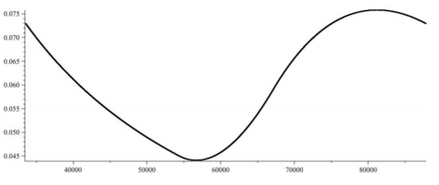

Sam Spiro: Research

Below are a list of my research papers. Some other links of interest:
Papers
This list is roughly organized by subject. Alternatively one can view it in chronological order.
Extremal Combinatorics
- Generalized Quasikernels in Digraphs.
Submitted, 2024.
- Clique Supersaturation (with Quentin Dubroff, Benjamin Gunby, and Bhargav Narayanan).
Submitted, 2023.
- Crossing Numbers of complete bipartite graphs (with Jozsef Balogh, Bernard Lidicky, Sergey Norin, Florian Pfender, and Gelasio Salazar).
Procedia Computer Science, 2023.
- Antichain Codes (with Benjamin Gunby, Xiaoyu He, and Bhargav Narayanan).
Bulletin of the London Mathematical Society, 2023.
- Incidence-free sets and edge domination in incidence graphs (with Sam Adriaensen and Sam Mattheus).
Journal of Combinatorial Designs, 2022.
- On t-intersecting Hypergraphs with Minimum Positive Codegrees.
SIAM Journal of Discrete Mathematics, 2021.
- Saturation Problems in Convex Geometric Hypergraphs (with Jason O'Neill).
European Journal of Combinatorics, 2021.
- Maximal Independent Sets in Clique-free Graphs (with Xiaoyu He and Jiaxi Nie).
European Journal of Combinatorics, 2021.
- Linear Bounds for Cycle-free Saturation Games (with Sean English, Tomas Masarik, Grace McCourt, Erin Meger, Michael S. Ross).
The Electronic Journal of Combinatorics, 2021.
- The Wiener Index of Signed Graphs.
Applied Mathematics and Computation, 2021.
- The Maximum Number of Appearances of a Word in a Grid (with Gregory Patchell).
The American Mathematical Monthly, 2020.
- Relative Turan Numbers for Hypergraph Cycles (with Jacques Verstraëte).
Discrete Mathematics, 2020.
- Relative Turan Problems for Uniform Hypergraphs (with Jacques Verstraëte).
SIAM Journal of Discrete Mathematics, 2020.
- Forbidding K2t Traces in Triple Systems (with Ruth Luo).
The Electronic Journal of Combinatorics, 2020.
- Triangle-Free Subgraphs of Hypergraphs (with Jiaxi Nie and Jacques Verstraëte).
Graphs and Combinatorics, 2020.
- Saturation Games for Odd Cycles.
The Electronic Journal of Combinatorics, 2019.
- Forbidden Families of Minimal Quadratic and Cubic Configurations (with Attila Sali).
The Electronic Journal of Combinatorics, 2017.
Probabilistic Combinatorics
- Sidorenko Hypergraphs and Random Turan Numbers (with Jiaxi Nie).
Submitted, 2023.
- The Random Turan Problem for Theta Graphs (with Gwen McKinley).
Submitted, 2023.
- Random Polynomial Graphs for Random Turan Problems.
Journal of Graph Theory (Accepted), 2022.
- Counting Deranged Matchings (with Erlang Surya).
European Journal of Combinaotrics (Accepted), 2022.
- Zero Forcing with Random Sets (with Bryan Curtis, Luyining Gan, Jamie Haddock, and Rachel Lawrence).
Discrete Mathematics, 2022.
- Semi-restricted Rock, Paper, Scissors (with Erlang Surya and Ji Zeng).
The Electronic Journal of Combinatorics, 2022.
- Continuously Increasing Subsequences of Random Multiset Permutations (with Alexander Clifton, Bishal Deb, Yifeng Huang, and Semin Yoo).
European Journal of Combinatorics, 2021. Conference poster at Formal Power Series and Algebraic Combinatorics, 2022.
- A Smoother Notion of Spread Hypergraphs.
Combinatorics, Probability, and Computing, 2021.
- Online Card Games.
Electronic Journal of Probability, 2021.
- Practical Strategies for Card
Guessing with Feedback (with Persi Diaconis and Ron Graham).
The American Mathematical Monthly, 2020.
- Card Guessing with Partial Feedback (with Persi Diaconis, Ron Graham, and Xiaoyu He).
Combinatorics, Probability, and Computing, 2020.
- Counting Hypergraphs with Large Girth (with Jacques Verstraëte).
Journal of Graph Theory, 2020.
- An Averaging Process for Hypergraphs.
Journal of Applied Probability, 2020.
- Random Graphs Induced by Catalan Pairs (with Daniël Kroes).
Journal of Combinatorics, 2019.
Spectral Graph Theory
- New Eigenvalue Bound for the Fractional Chromatic Number (with Krystal Guo).
Journal of Graph Theory, 2022.
- Complementary Vanishing Graphs (with Craig Erickson, Luyining Gan, Jurgen Kristchgau, and Jephian C.-H. Lin).
Linear Algebra and its Applications (Accepted), 2022.
- Polynomial Relations Between Matrices of Graphs.
Journal of Graph Theory, 2018.
Enumerative Combinatorics
- Eulerian Polynomials for Digraphs (with Kyle Celano and Nicholas Sieger).
Submitted, 2023. Conference poster at Formal Power Series and Algebraic Combinatorics, 2023
- Ballot Permutations and Odd Order Permutations.
Discrete Mathematics, 2020.
- Subset Parking Functions.
Journal of Integer Sequences, 2019
- Counting Labeled Threshold Graphs with Eulerian Numbers.
Australasian Journal of Combinatorics, 2020
Other
- Triangle Percolation on the Grid (with Igor Araujo, Bryce Frederickson, Robert Krueger, Bernard Lidicky, Tyrrell McAllister, Florian Pfender, and Eric Stucky).
Discrete and Computational Geometry (Accepted), 2023.
- Slow Recurrences.
Journal of Number Theory, 2020
- Slow Fibonacci Walks (with Fan Chung and Ron Graham).
Journal of Number Theory, 2019